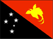
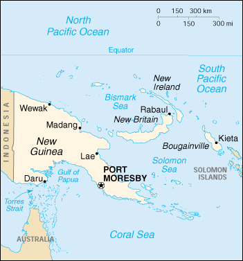

{kind=link}


| Papua New Guinea |  |
|
|  | |
| Introduction |
Background: The eastern half of the island of New Guinea - second largest in the world - was divided between Germany (north) and the UK (south) in 1885. The latter area was transferred to Australia in 1902, which occupied the northern portion during World War I and continued to administer the combined areas until independence in 1975. A nine-year secessionist revolt on the island of Bougainville ended in 1997, after claiming some 20,000 lives.
| Geography |
Location: Southeastern Asia, group of islands including the eastern half of the island of New Guinea between the Coral Sea and the South Pacific Ocean, east of Indonesia
Geographic coordinates: 6 00 S, 147 00 E
Map references: Oceania
Area:
total:
462,840 sq km
land:
452,860 sq km
water:
9,980 sq km
Area - comparative: slightly larger than California
Land boundaries:
total:
820 km
border countries:
Indonesia 820 km
Coastline: 5,152 km
Maritime claims:
measured from claimed archipelagic baselines
continental shelf:
200-m depth or to the depth of exploitation
exclusive fishing zone:
200 nm
territorial sea:
12 nm
Climate: tropical; northwest monsoon (December to March), southeast monsoon (May to October); slight seasonal temperature variation
Terrain: mostly mountains with coastal lowlands and rolling foothills
Elevation extremes:
lowest point:
Pacific Ocean 0 m
highest point:
Mount Wilhelm 4,509 m
Natural resources: gold, copper, silver, natural gas, timber, oil, fisheries
Land use:
arable land:
0.1%
permanent crops:
1%
permanent pastures:
0%
forests and woodland:
92.9%
other:
6% (1993 est.)
Irrigated land: NA sq km
Natural hazards: active volcanism; situated along the Pacific "Rim of Fire"; the country is subject to frequent and sometimes severe earthquakes; mud slides; tsunamis
Environment - current issues: rain forest subject to deforestation as a result of growing commercial demand for tropical timber; pollution from mining projects; severe drought
Environment - international agreements:
party to:
Antarctic Treaty, Biodiversity, Climate Change, Endangered Species, Environmental Modification, Hazardous Wastes, Law of the Sea, Marine Dumping, Nuclear Test Ban, Ozone Layer Protection, Ship Pollution, Tropical Timber 83, Tropical Timber 94, Wetlands
signed, but not ratified:
Antarctic-Environmental Protocol, Climate Change-Kyoto Protocol
Geography - note: shares island of New Guinea with Indonesia; one of world's largest swamps along southwest coast
| People |
Population: 4,926,984 (July 2000 est.)
Age structure:
0-14 years:
39% (male 972,289; female 940,049)
15-64 years:
58% (male 1,470,158; female 1,365,523)
65 years and over:
3% (male 84,942; female 94,023) (2000 est.)
Population growth rate: 2.47% (2000 est.)
Birth rate: 32.68 births/1,000 population (2000 est.)
Death rate: 8 deaths/1,000 population (2000 est.)
Net migration rate: 0 migrant(s)/1,000 population (2000 est.)
Sex ratio:
at birth:
1.05 male(s)/female
under 15 years:
1.03 male(s)/female
15-64 years:
1.08 male(s)/female
65 years and over:
0.9 male(s)/female
total population:
1.05 male(s)/female (2000 est.)
Infant mortality rate: 59.89 deaths/1,000 live births (2000 est.)
Life expectancy at birth:
total population:
63.1 years
male:
61.05 years
female:
65.26 years (2000 est.)
Total fertility rate: 4.38 children born/woman (2000 est.)
Nationality:
noun:
Papua New Guinean(s)
adjective:
Papua New Guinean
Ethnic groups: Melanesian, Papuan, Negrito, Micronesian, Polynesian
Religions: Roman Catholic 22%, Lutheran 16%, Presbyterian/Methodist/London Missionary Society 8%, Anglican 5%, Evangelical Alliance 4%, Seventh-Day Adventist 1%, other Protestant 10%, indigenous beliefs 34%
Languages:
English spoken by 1%-2%, pidgin English widespread, Motu spoken in Papua region
note:
715 indigenous languages
Literacy:
definition:
age 15 and over can read and write
total population:
72.2%
male:
81%
female:
62.7% (1995 est.)
| Government |
Country name:
conventional long form:
Independent State of Papua New Guinea
conventional short form:
Papua New Guinea
abbreviation:
PNG
Data code: PP
Government type: parliamentary democracy
Capital: Port Moresby
Administrative divisions: 20 provinces; Bougainville, Central, Chimbu, Eastern Highlands, East New Britain, East Sepik, Enga, Gulf, Madang, Manus, Milne Bay, Morobe, National Capital, New Ireland, Northern, Sandaun, Southern Highlands, Western, Western Highlands, West New Britain
Independence: 16 September 1975 (from the Australian-administered UN trusteeship)
National holiday: Independence Day, 16 September (1975)
Constitution: 16 September 1975
Legal system: based on English common law
Suffrage: 18 years of age; universal
Executive branch:
chief of state:
Queen ELIZABETH II (since 6 February 1952), represented by Governor General Silas ATOPARE (since 13 November 1997)
head of government:
Prime Minister Mekere MORAUTA (since NA August 1999); Deputy Prime Minister Mao ZEMING (since NA December 1999)
cabinet:
National Executive Council appointed by the governor general on the recommendation of the prime minister
elections:
none; the monarch is hereditary; governor general appointed by the National Executive Council; prime minister and deputy prime minister appointed by the governor general for up to five years on the basis of majority support in National Parliament
Legislative branch:
unicameral National Parliament - sometimes referred to as the House of Assembly (109 seats, 89 elected from open electorates and 20 from provincial electorates; members elected by popular vote to serve five-year terms)
elections:
last held 14-28 June 1997 (next to be held NA June 2002)
election results:
percent of vote by party - PPP 15%, Pangu Pati 14%, NA 14%, PDM 8%, PNC 6%, PAP 5%, UP 3%, NP 1%, PUP 1%, independents 33%; seats by party - PPP 16, Pangu Pati 15, NA 15, PDM 9, PNC 7, PAP 5, UP 3, NP 1, PUP 1, independents 37; note - association with political parties is very fluid
Judicial branch: Supreme Court, the chief justice is appointed by the governor general on the proposal of the National Executive Council after consultation with the minister responsible for justice, other judges are appointed by the Judicial and Legal Services Commission
Political parties and leaders: Black Action Party [Paul WANJIK]; Bougainville Unity Alliance or BUA [Samuel AKOITAI]; Christian Democratic Party [Dilu GOMA]; Hausman Party [Waim TOKAM]; League for National Advancement or LNA [leader NA]; Liberal Party [Rabbie SAMAI]; Melanesian Alliance or MA [Fr. John MOMIS]; Melanesian Labor Party [Paul MONDIA]; Milne Bay Party [Simon MUMURIK]; Movement for Greater Autonomy [Stephen POKAWIN]; National Alliance or NA [Michael SOMARE]; National Party or NP [Paul PORA]; Papua New Guinea First Party (includes People's National Congress or PNC [Simon KAUMI] and Christian Country Party [Avusi TANO]); Papua New Guinea United Party or Pangu Pati [Chris HAIVETA]; People's Action Party or PAP [Ted DIRO]; People's Democratic Movement or PDM [Iario LASARO]; People's National Alliance [leader NA]; People's Progress Party or PPP [Michael NALI]; People's Resources Awareness Party [leader NA]; People's Solidarity Party [Kala SWOKIM]; People's Unity Party or PUP [Alfred KAIABE]; United Party or UP [Rimbiuk PATO]; United Resource Party [Masket IANGALIO]
International organization participation: ACP, APEC, AsDB, ASEAN (observer), C, CP, ESCAP, FAO, G-77, IBRD, ICAO, ICFTU, ICRM, IDA, IFAD, IFC, IFRCS, IHO, ILO, IMF, IMO, Intelsat, Interpol, IOC, IOM (observer), ISO (correspondent), ITU, NAM, OPCW, Sparteca, SPC, SPF, UN, UNCTAD, UNESCO, UNIDO, UPU, WFTU, WHO, WIPO, WMO, WTrO
Diplomatic representation in the US:
chief of mission:
Ambassador Nagora Y. BOGAN
chancery:
1779 Massachusetts Avenue NW, Washington, DC 20036
telephone:
[1] (202) 745-3680
FAX:
[1] (202) 745-3679
Diplomatic representation from the US:
chief of mission:
Ambassador Arma Jane KARAER
embassy:
Douglas Street, Port Moresby
mailing address:
P. O. Box 1492, Port Moresby
telephone:
[675] 321-1455
FAX:
[675] 321-3423
Flag description: divided diagonally from upper hoist-side corner; the upper triangle is red with a soaring yellow bird of paradise centered; the lower triangle is black with five white five-pointed stars of the Southern Cross constellation centered
| Economy |
Economy - overview: Papua New Guinea is richly endowed with natural resources, but exploitation has been hampered by the rugged terrain and the high cost of developing infrastructure. Agriculture provides a subsistence livelihood for the bulk of the population. Mineral deposits, including oil, copper, and gold, account for 72% of export earnings. Budgetary support from Australia and development aid under World Bank auspices have helped sustain the economy. In 1995, Port Moresby reached agreement with the IMF and World Bank on a structural adjustment program, of which the first phase was successfully completed in 1996. In 1997, droughts caused by the El Nino weather pattern wreaked havoc on Papua New Guinea's coffee, cocoa, and coconut production, the mainstays of the agricultural-based economy and major sources of export earnings. The coffee crop was slashed by up to 50% in 1997. Despite problems with drought, the year 1998 saw a small recovery in GDP. Growth increased to 3.6% in 1999 and may be even higher in 2000, say 4.3%.
GDP: purchasing power parity - $11.6 billion (1999 est.)
GDP - real growth rate: 3.6% (1999 est.)
GDP - per capita: purchasing power parity - $2,500 (1999 est.)
GDP - composition by sector:
agriculture:
25%
industry:
35%
services:
40% (1999 est.)
Population below poverty line: NA%
Household income or consumption by percentage share:
lowest 10%:
1.7%
highest 10%:
40.5% (1996)
Inflation rate (consumer prices): 16.5% (1999 est.)
Labor force: 1.941 million
Labor force - by occupation: agriculture NA%, industry NA%, services NA%
Unemployment rate: NA%
Budget:
revenues:
$1.6 billion
expenditures:
$1.9 billion, including capital expenditures of $NA (1998 est.)
Industries: copra crushing, palm oil processing, plywood production, wood chip production; mining of gold, silver, and copper; crude oil production; construction, tourism
Industrial production growth rate: NA%
Electricity - production: 1.74 billion kWh (1998)
Electricity - production by source:
fossil fuel:
69.54%
hydro:
30.46%
nuclear:
0%
other:
0% (1998)
Electricity - consumption: 1.618 billion kWh (1998)
Electricity - exports: 0 kWh (1998)
Electricity - imports: 0 kWh (1998)
Agriculture - products: coffee, cocoa, coconuts, palm kernels, tea, rubber, sweet potatoes, fruit, vegetables; poultry, pork
Exports: $1.9 billion (f.o.b., 1999 est.)
Exports - commodities: oil, gold, copper ore, logs, palm oil, coffee, cocoa, crayfish and prawns
Exports - partners: Australia 20%, Japan 13%, Germany 7%, South Korea 5%, Philippines 4%, UK 3% (1998)
Imports: $1 billion (f.o.b., 1999 est.)
Imports - commodities: machinery and transport equipment, manufactured goods, food, fuels, chemicals
Imports - partners: Australia 51%, Singapore 10%, Japan 8%, US 5%, New Zealand 5%, Malaysia 3% (1998)
Debt - external: $2.4 billion (1999 est.)
Economic aid - recipient: $400 million (1999 est.)
Currency: 1 kina (K) = 100 toea
Exchange rates: kina (K) per US$1 - 2.7624 (November 1999), 2.520 (1999), 2.058 (1998), 1.434 (1997), 1.318 (1996), 1.276 (1995)
Fiscal year: calendar year
| Communications |
Telephones - main lines in use: 44,000 (1995)
Telephones - mobile cellular: 0 (1995)
Telephone system:
services are adequate and being improved; facilities provide radiotelephone and telegraph, coastal radio, aeronautical radio, and international radio communication services
domestic:
mostly radiotelephone
international:
submarine cables to Australia and Guam; satellite earth station - 1 Intelsat (Pacific Ocean); international radio communication service
Radio broadcast stations: AM 8, FM 19, shortwave 28 (1998)
Radios: 410,000 (1997)
Television broadcast stations: 3 (1997)
Televisions: 42,000 (1997)
Internet Service Providers (ISPs): 2 (1999)
| Transportation |
Railways: 0 km
Highways:
total:
19,600 km
paved:
686 km
unpaved:
18,914 km (1996 est.)
Waterways: 10,940 km
Ports and harbors: Kieta, Lae, Madang, Port Moresby, Rabaul
Merchant marine:
total:
21 ships (1,000 GRT or over) totaling 36,417 GRT/52,432 DWT
ships by type:
bulk 2, cargo 10, chemical tanker 1, combination ore/oil 1, container 1, petroleum tanker 3, roll-on/roll-off 3 (1999 est.)
Airports: 492 (1999 est.)
Airports - with paved runways:
total:
19
2,438 to 3,047 m:
1
1,524 to 2,437 m:
14
914 to 1,523 m:
3
under 914 m:
1 (1999 est.)
Airports - with unpaved runways:
total:
473
1,524 to 2,437 m:
13
914 to 1,523 m:
58
under 914 m:
402 (1999 est.)
Heliports: 2 (1999 est.)
| Military |
Military branches: Papua New Guinea Defense Force (includes Ground, Naval, and Air Forces, and Special Forces Unit)
Military manpower - availability:
males age 15-49:
1,274,818 (2000 est.)
Military manpower - fit for military service:
males age 15-49:
706,159 (2000 est.)
Military expenditures - dollar figure: $42 million (FY98)
Military expenditures - percent of GDP: 1% (FY98)
| Transnational Issues |
Disputes - international: none